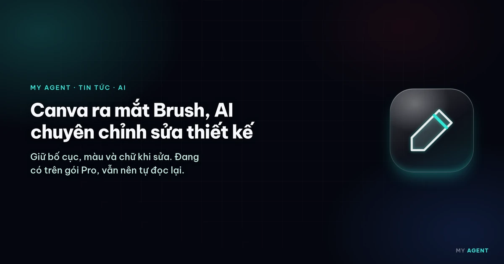
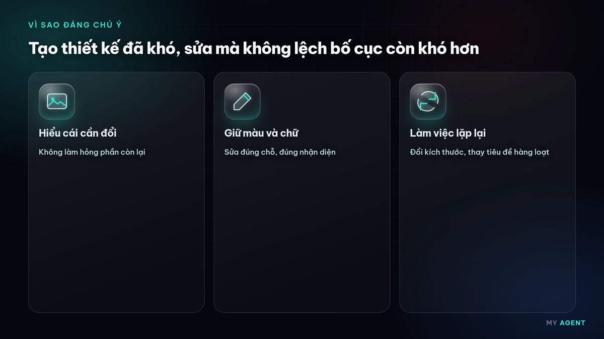
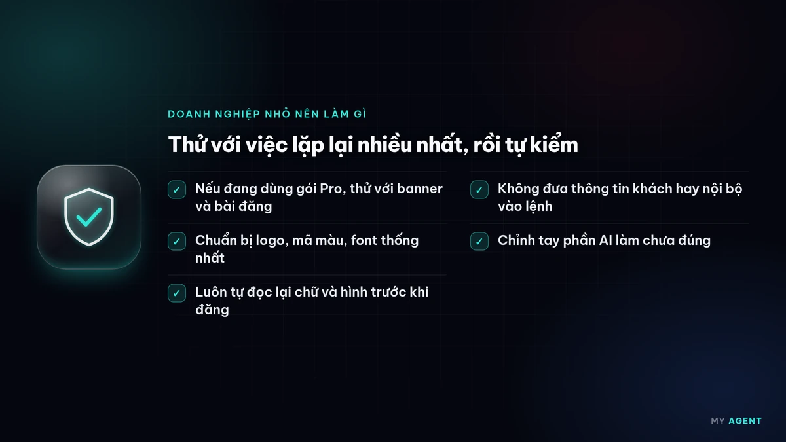

Có gì mới
Ngày 30/10/2026 (giờ Việt Nam), Canva công bố Brush, một mô hình thị giác – ngôn ngữ (vision-language model) dành riêng cho việc chỉnh sửa thiết kế. Brush do nhóm Canva Research tự xây dựng và ra mắt chỉ khoảng một tuần sau Craft, mô hình tạo ảnh đầu tiên của hãng. Theo cách Canva mô tả, Craft lo phần tạo hình ảnh, còn Brush lo phần tinh chỉnh toàn bộ thiết kế xung quanh hình ảnh đó.
Điểm khác của Brush là nó "nhìn" được thiết kế đang mở, hiểu các thành phần được sắp xếp ra sao rồi mới sửa theo yêu cầu. Việc sửa có thể nhỏ như đổi một dòng chữ, hoặc lớn như cập nhật tiêu đề trên mọi trang của một bộ slide. Canva cho biết Brush hoạt động theo vòng lặp kiểu agent: tự viết và chạy mã để chỉnh các phần tử, sau đó kiểm tra lại kết quả trên trang để quyết định bước tiếp theo.
Vì sao đáng chú ý
Theo Canva, tạo ra một thiết kế đẹp bằng AI đã khó, nhưng sửa thiết kế còn khó hơn: mô hình phải hiểu cái gì cần đổi và cái gì phải giữ nguyên, nếu không một yêu cầu nhỏ có thể làm lệch cả bố cục, màu sắc hay kiểu chữ. Hãng nói Brush được huấn luyện thêm trên các tác vụ thiết kế thật, kết hợp học tăng cường với tiêu chí chấm điểm do đội ngũ thiết kế chuyên nghiệp của Canva đặt ra.

Canva công bố Brush nhanh hơn tới 69% với các tác vụ chỉnh sửa thông thường so với agent thiết kế trước đây của hãng, và trong thử nghiệm nội bộ cho chất lượng tương đương hoặc tốt hơn ở phần lớn tác vụ. Đây là số liệu do Canva tự đo, chưa có đánh giá độc lập.
Dùng thế nào
Hiện Brush có trong Canva AI cho người dùng gói Canva Pro, các gói khác sẽ được mở sau. Người dùng mở một thiết kế có sẵn trong trình chỉnh sửa (hoặc đính kèm thiết kế vào Canva AI), chọn "Brush" trong danh sách mô hình rồi gõ yêu cầu. Mọi thứ Brush tạo ra vẫn chỉnh tay được như thiết kế bình thường. Một số cách dùng Canva gợi ý:
- Đổi phong cách hình ảnh: màu chủ đạo, thời tiết, không khí của ảnh.
- Sửa đồng loạt trên thiết kế nhiều trang chỉ bằng một câu lệnh.
- Chuyển một thiết kế sang định dạng khác, ví dụ từ slide thuyết trình sang ảnh đăng mạng xã hội.
Canva cho biết đang phát triển thêm hỗ trợ Brand Kit (bộ nhận diện thương hiệu), khả năng tham chiếu tệp đính kèm và cải thiện cách xử lý bố cục nhiều hình ảnh.
Doanh nghiệp nhỏ nên làm gì

- Nếu đang dùng Canva Pro để làm banner, bài đăng Facebook, Zalo, hãy thử Brush với việc lặp lại nhiều nhất, như đổi kích thước hoặc thay tiêu đề hàng loạt.
- Chuẩn bị sẵn logo, mã màu và font chữ thống nhất; khi có Brand Kit, AI sẽ dễ giữ đúng nhận diện hơn.
- Luôn tự đọc lại nội dung AI sửa, nhất là tên sản phẩm, khuyến mãi, số điện thoại và địa chỉ.
- Ảnh dùng cho website cần nhẹ và có mô tả (alt) rõ ràng để không làm chậm trang.
Nguồn tham khảo
- Canva Newsroom – Introducing Canva Brush (mở tab mới) · 30/10/2026
www.canva.com/newsroom/news/canva-brush/
Bài viết do My Agent tự biên soạn bằng lời của mình dựa trên các nguồn trên; nội dung gốc thuộc về nguồn. Từ khóa: canva · ai · thiet-ke.